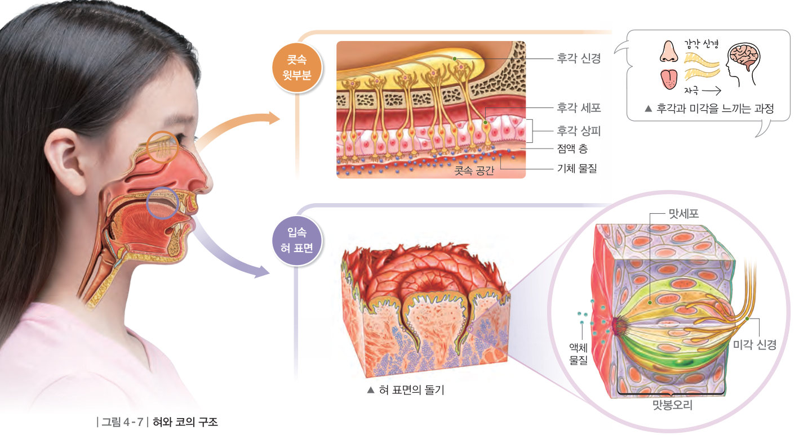
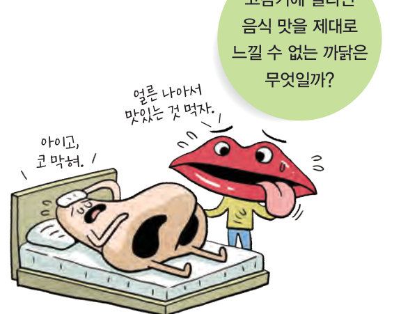
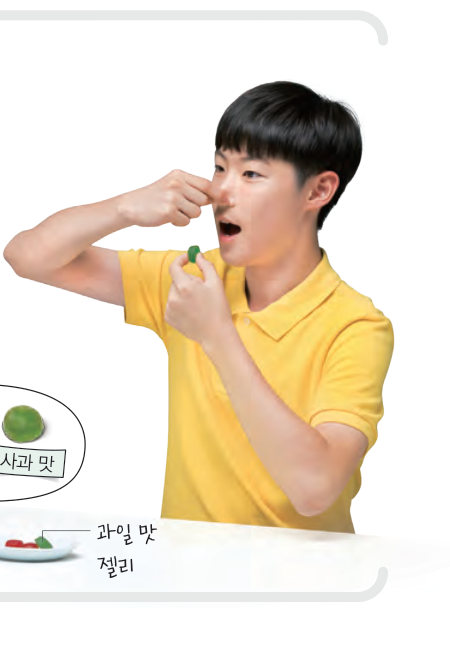

코감기에 걸리면 왜 음식 맛을 제대로 못 느낄까? 가상 맛 실험으로 코를 막고·열고 젤리를 먹어 미각과 후각의 역할을 비교하고, 후각 피로 실험으로 같은 냄새를 계속 맡을 때의 변화를 확인해 보자.
우리는 혀에서 액체 물질을 자극으로 받아들여 단맛, 신맛, 짠맛, 쓴맛, 감칠맛을 느끼는데, 이러한 감각을 미각이라고 한다. 또, 코에서 기체 물질을 자극으로 받아들여 여러 가지 냄새를 느끼는데, 이러한 감각을 후각이라고 한다.

혀 표면의 돌기 옆면에는 그림 4-7과 같이 맛봉오리가 여러 개 있고, 맛봉오리에는 맛세포가 모여 있다. 입속으로 들어온 액체 물질이 맛세포를 자극하면, 이 자극이 미각 신경을 통해 뇌로 전달되어 맛을 느끼게 된다.
콧속 윗부분은 후각 세포가 있는 후각 상피로 덮여 있다. 콧속으로 들어온 기체 물질이 후각 세포를 자극하면, 이 자극이 후각 신경을 통해 뇌로 전달되어 냄새를 맡게 된다. 후각 세포는 쉽게 피로해지기 때문에 같은 냄새를 계속 맡으면 나중에는 잘 느끼지 못한다.
동물의 감각 기관 중 사람에게 없는 특수한 감각 기관을 골라 구조와 기능을 조사해 보자. 예) 상어의 전기 감각 기관, 뱀의 적외선 감각 기관(피트 기관), 돌고래의 초음파 감각 기관
| ⑴ 혀의 맛세포는 매운맛과 떫은맛을 자극으로 받아들인다. | |
| ⑵ 코를 막고 과일 맛 젤리를 먹으면 단맛, 신맛과 과일 맛을 모두 느낄 수 있다. | |
| ⑶ 후각은 쉽게 피로해지기 때문에 같은 냄새를 계속 맡으면 나중에는 잘 느끼지 못한다. | |
| ⑷ 음식물을 먹으면 액체 물질 자극이 혀 표면의 돌기 옆면에 있는 맛봉오리로 전달된다. |
| 평가 기준 | 스스로 평가 |
|---|---|
| 혀와 코의 구조와 기능을 알고, 맛을 느끼는 과정과 냄새를 맡는 과정을 설명할 수 있다. | |
| 감각 기관마다 받아들이는 자극이 다름을 설명할 수 있다. |